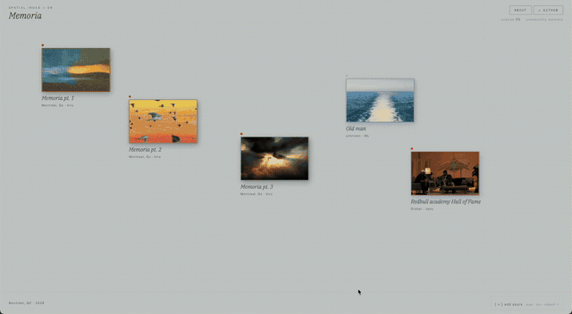

Playlists preserve tracks. They rarely preserve listening context.
A mix is a temporal fragment: a mood, a sequence, and a set of references that do not fit cleanly inside a streaming player. Standard archives keep the audio file, but they flatten the images, voice notes, influences, and spatial associations around it.
Memoria treats the curation behind a mix as something worth preserving in its own right. The project turns liner notes into a place you move through rather than a paragraph you skim.
"Closer to an archive than a queue. Closer to a walk than a stream."

The memory palace made literal in scanned Montréal rooms.
The project draws on the classical method of loci: memory organized through spatial navigation. In Memoria, that logic becomes literal. You enter a point cloud or mesh of a real room, and the structure of the room becomes the structure of recall.
The current scenes use scans made on an iPhone 15 Pro through Polycam in Montréal, with each space acting as a container for a Desire Path Radio mix. The archive becomes navigable through rooms rather than through a playlist queue.
Notes as coordinates, timestamps, and camera paths.
Each scene supports notes pinned in 3D space. A note can carry a label, description, and media attachment, plus an optional `mixTimestamp` that ties it to a precise moment in the audio.
When playback reaches a timestamped note, the camera can fly directly to that point in the room. Clicking a note in the sidebar also seeks the audio and moves the viewer through the space. The result is a spatial liner note system rather than a static annotation layer.
Scenes are curated without a heavy backend: scans, mix URLs, and exported annotation JSON files are assembled into preset scenes. That keeps the archive lightweight while still allowing contributor submissions.
"Closer to walking through an archive than playing a playlist."
A lightweight browser archive for scanned music spaces.
Spatial notes make curation feel architectural.
The key shift in Memoria is editorial. Once notes have coordinates, sequence and placement become inseparable. A reference is no longer just attached to a mix; it occupies a position, and that position changes the reading of the whole archive.
The contribution model also stays intentionally light. Instead of building a large account system, the project centers exported scene files and curator-reviewed additions. That keeps attention on the archive itself rather than on social mechanics around it.